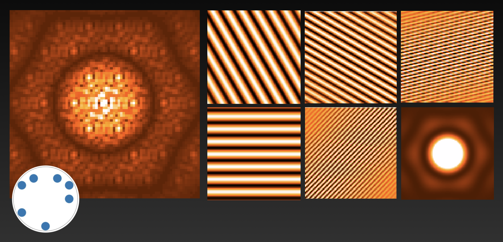
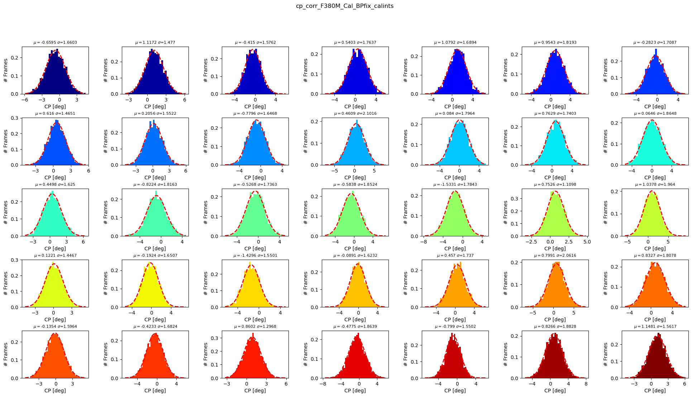

This repository includes software to reduce data obtained with Fizeau interferometry in the form of Sparse Aperture Masking.
Link to the GitHub repository with the code, click HERE
1. SAMPip
Sparse Aperture Masking Interferometry is a technique that transforms a unitary telescope into a Fizeau interferometry by placing a mask with a series of pin-holes in the pupil plane of the telescope. Each pair of pin-holes produces a non-redundant baseline that samples a specific spatial frequency in the Fourier domain (i.e., a specific angular scale). This technique has important advantages compared with regular imaging: (a) the mask acts as spatial filter, therefore, only structures between 0.5 λ/B and 5 λ/B are sampled; (b) the Point-Spread Function (PSF) is a very well defined interferogram that depends, at first order, of the mask geometry; (c) the best-resolution achieved with this technique is two times better than the standard diffraction limit regime of a full-pupil observation.
CASSINI-SAMpip is a module that recovers the interferometric observables (squared visibilities and closure phases) from an interferogram obtained with a non-redundant mask (NRM). SAMPip uses the geometry of the to decompose the interferogram into a series of fringe patterns produced by each pair of pin-holes in the mask. For example, in the case of a non-redundant mask with 7 pin-holes, there will be 21 baselines. Each of them is decomposed into cosine and sine factors. In this case, the model of the interferogram, thus, contains 42 parameters, plus one more that accounts for the difraction pattern of the pin-hole geometry and an offset that accounts for the zero point flux. Fig. 2 includes an example of the interferogram produced by the NRM on board of the instrument NIRISS at the James Webb Space Telescope .

SAMPip uses an expanssion of the following fringe expression (the cosine and sine factors are repeated per baseline, BLi, in the array) to obtain the total flux in the interferogram, I0, as well as the visibilities, Vi, and phases, φi. The term kxt depends on the spatial frequency sampled by the mask. The complete mathematical description of the model used by SAMPip is described in Sivaramakrishnan et al. (2023).
In order to extract the interferometric observables, the pixel values from the interferogram, It(k,V,φ) are extracted and the right side of the fringe equation is solved using a matrix inversion. Once the visibilities and phases are obtained, the closure phases are calculated from them. Please, take into account that the extracted phases could be highly affected by atmospheric (in case of ground-based observations) and instrumental systematics. Closure Phases (CPs) (see Fig. 2) are computed by obtaining the argument of the complex triple product of visibilities obtained from a closed triangle of baselines. Closure phases are particularly important because they are observables that are free of telescope-dependent errors. This observable traces deviations from centro-symmetric morphologies. With the use of closure phases, we could recover interferometric images, albeit there is less phase information than amplitude values than with regular Fourier phases.
Tipically, the SAM data are stored in cubes composed by a sequence of frames. The raw observables are, thus, extracted frame by frame and the final ones are obtained through a weigthed average. Please, notice that when the data cubes are obtained, it is necessary to take into account the rotation of the parallactic angle. This should not vary more than a few degrees. Otherwise, by averaging the frames in a data cube will blur the interferometric fringes. Also, the model used by SAMPip corrects for the attenuation of the fringes' contrast due to broad-band filters used during the observations. Finally, it is important to mention that, in addition to the source's observations it is also necessary to observe a point-like object to calibrate the trasnfer function of the instrument.
2. Example of the use of SAMPip with the JWST (User Manual)
SAMPip is included in this repository. The software consist in a series of Python scripts to perform the data reduction. We included a test.py script to load a simulated data as example for the reduction. This script setups the code according to the instrument requests. To exemplify the use of SAMPip, we include as example the setup used to analyze the data of the massive binary WR 137. The observational sequence and the full data analysis are described in Lau et al. (2023).
To reproduce the interferometric observables from the example included in this repository, it is as simple as clone SAMPip from the GitHub repository with the following command:
>> git clone https://github.com/cosmosz5/SAMPip.git
Inside the repository, there is a script that setup all the required parameters to run SAMPip. The script is called test.py. To run this code, simply type in the Terminal:
>> python test.py
The parameters included in test.py are described below:
####### The tolowing parameters are necessary to run SAMPip ##################
mask_filename = '7holes_jwst_mask_corr.txt' #A text file with the mask geometry
wave = 4.817e-06 #Central wavelength of the observations (meters)
bandwidth = 0.298e-06 #Bandwidth of the observations (meters)
hole_size = 0.82 #in meters
imsize = 80 # in pixels
px_scalex = 65.3249 #X-dimenssion pixel scale in mas
px_scaley = 65.7226 #Y-dimenssion pixel scale in mas
hole_geom = 'HEXAGON' #HEXAGON for the JWST
inst = 'JWST'
arrname = 'DATA' ## This could be DATA or SIM. For the "on-sky" data use DATA
rotation_angle = -0.36 ### In case the mask is not propely aligned with the position indicated in the manual
oversample = 1.0 ## Number of times that you want to oversample the data. This is employed in simulations, not with real data.
scale_factor = [0.996, 0.999] #Small pixel scale correction
center_factor = [0,0] #Centroid position, in case alignment is needed
Once the main parameters are setup, then, the main instructions are run to extract the observables. For this example, first the 3.8 μm filter is run (for both science target and calibrator) and then the observables for the 4.8 μm filter are obtained. The following lines extract the observables as described before:
data_filename = 'data_WR137_bpfix_480.txt'
source = 'WR137'
sim_SAM.simSAM_PSF (data_filename, mask_filename, wave, bandwidth, hole_size, px_scalex, px_scaley, imsize, hole_geom, source, inst, \
arrname, rotation_angle, oversample, scale_factor, center_factor, affine=False)
data_filename = 'data_cal_bpfix_480.txt'
source = 'Cal'
sim_SAM.simSAM_PSF (data_filename, mask_filename, wave, bandwidth, hole_size, px_scalex, px_scaley, imsize, hole_geom, source, inst, \
arrname, rotation_angle, oversample, scale_factor, center_factor, affine=False)
## Here, we change the filter and bandpass:
wave = 3.82650365041922e-06
bandwidth = 0.205e-06
##
data_filename = 'data_WR137_bpfix_380.txt'
source = 'WR137'
sim_SAM.simSAM_PSF (data_filename, mask_filename, wave, bandwidth, hole_size, px_scalex, px_scaley, imsize, hole_geom, source, inst, \
arrname, rotation_angle, oversample, scale_factor, center_factor, affine=False)
data_filename = 'data_cal_bpfix_380.txt'
source = 'Cal'
sim_SAM.simSAM_PSF (data_filename, mask_filename, wave, bandwidth, hole_size, px_scalex, px_scaley, imsize, hole_geom, source, inst, \
arrname, rotation_angle, oversample, scale_factor, center_factor, affine=False)
The Github repository also contains the .txt files with the list of targets necessary for the reduction. As it was mentioned before, the format of the data are cubes with different frames that include the interferograms. Those files can be explored using the DS9 software. After running the test.py script, the code will generate a series of .fits files for quality check purposes, together with the final OIFITS files with the extracted observables. The list of files created by the extraction of the observables are the following ones:
1. CENTERED_*.fits files > These are the centered input files. SAMPip does a fine adjustment of the interferogram centroid in the middle of the pixel grid (this option is not yet available but the files are produced).
2. MODEL_interferogram_*.fits > These are the models of the interferograms produced by the code. They should be quite similar to the input data files. We can use the MODEL files to inspect (quickly) visually how good is our fringe modeling (i.e., visibility extraction)
3. MODEL_interferogram_windowed_*.fits > These are the models of the interferograms produced by the code but they are windowed. Only the valid pixels for the model extraction have values different from zero.
4. MODEL_residuals+*.fits > These .fits files show the residuals between our fringe model and the input data.
5. MTF.fits > This .fits file includes the Mutual Trsfer Funcion of the interferogram
6. PSF.fits > This .fits file includes the model of the interferogram produced solely by the geometry of the non-redundant mask
7. cube_bl.fits > This .fits file contains the cube of the different interference pattern produce by each pair of pin-holes in the non-redundant mask.
8. hexa.fits > This file contains the diffraction pattern of the pin-hole geometry
9. hexagon.fits > This file contains the geometry of the pin-hole mask
10. WINDDAT_*.fits > These files are the windowed input data sets used for the model extraction
11. SIM_DATA_uncalib.*.fits > These are the OFITIS files with the reduced data. They are in a standard OIFITS format and includes all the interferometric observables extracted with SAMPip.
The code also produces a series of .png files to show the quality of the observables' extraction. Figs. 4 and 5 show the distribution values (from the frames in a data cube) of the squared visibilities and closure phases for the 3.8 μm filter for WR 137. The mean value, σ and the standard deviation, σ per baseline and triplet.

SAMPip also produces a plot with the uncalibrated squared visibilities and closure phases versus spatial frequency. Fig. 6 displays an example of those observables for WR 137. Notice how the precision in the data are quite small (sometimes even below the symbol size). This is because of the superb quality of the JWST data.
In order to check if the extraction of the observables is correct the user should check the intermediate .fits files produced by SAMPip. A quick way of deduce the quality of the observables' extraction is to look at the residuals plots to look for systematic trends. Also, one could check the MODEL_interferogram_*.fits file. If it is similar to the structure of the interferogram in the data (e.g., size, asymmetries, position, etc), it also indicates that the extraction is correct. Fig. 7 displays the data and model fits side by side. It can be easily checked that both of them exhibits the same structure.
Once the RAW OIFITS data are obtained, it is necessary to calibrate them. For this, we use the script called calib_sam_obo.py. It contains a few instructions (see below) that calls the main calibration routine. The calibration process divide the raw science squared visibilities by the calibrator ones and subtract the calibrator's closure phases from the data ones. Fig. 8 displays the calibrated observables.
#### Calibration routine script ####
input_sci_path = '' # Path of the science OIFITS files
input_cal_path = '' # Path of the calibrator OIFITS files
calibrator_filename = 'cal_data_bpfix_380.txt' # .txt file with the Calibrator data files
science_filename = 'sci_data_bpfix_380.txt' # .txt file with the Science data files
cal_name = 'Cal_new' # Prefix of the calibrated OIFITS data
[sc_files] = readcol.readcol(input_sci_path+science_filename, twod=False)
[cal_files] = readcol.readcol(input_cal_path+calibrator_filename, twod=False)
for i in range(len(sc_files)):
sc_dat = sc_files[i]
cal_dat = cal_files[0]
delta = 1000.0 ### Hours
calibrate_SAM_obo.calibrate_SAM(input_sci_path, input_cal_path, sc_dat, cal_dat, cal_name, delta)
print('done')
The calibrated data can be used, thus, for imaging. Here, we just included the resulting the reconstructed images of WR 137. For comparison Fig. 9 shows the reconstructions obtained from different software and extractions obtained from different pipelines. SAMPip extractions performs similar to other pipelines that use different methods. The full scientific exploitation of the data and characterization of NIRISS-SAM are described in: Lau et al. (2023), Kammerer et al. (2023), and Sivaramakrishnan et al. (2023)
Sometimes different data sets are reduced. They can be combined with the oi_combine.fits python routine. It is a very simple script which call oi_merge.fits and js_oifits.fits. Those are two routines which reads the different data sets and write a combined OIFITS file with them. oi_merge.fits and js_oifits.fits are also included in the root directory of CASSINI/SAMPip. These two routines are also used by the during the data reduction. To combine the extracted OIFITS data, it is neccesary to create a .txt file with the oifits filenames to be combined. An example of the oi_combine.fits content is the following one:
from readcol import *
cd = True
if cd == True:
import oi_merge as oi_merge
else:
import oi_merge2 as oi_merges#
import importlib
importlib.reload(oi_merge)
data = 'combine_data_tot.txt' ## Text file with the OIFITS files to be combined
[files] = readcol(data, twod=False)
merged = oi_merge.oi_merge(files)
merged.write('COMB_JWST_SAM_tot.fits') ## Output: COMBINED OIFITS file